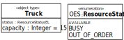
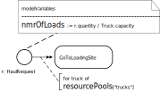

The JavaScript-based simulator OESjs implements the Object Event
Simulation paradigm, and, consequently, allows a straight-forward coding of
OE class models and DPMN process
models.
Implementing the Information Design
Model
For implementing the OE
class design model with OESjs, we have to code all object types, event types
and activity types specified in the model in the form of JavaScript
classes.

The
Truck object class can be coded with OESjs-Core2 in the
following way:
All object classes inherit an
id attribute and a name attribute from the
pre-defined OES foundation class oBJECT. Since trucks are
resource objects, we need to define a status property for them.
We also define a class-level attribute capacity for modeling
their load capacity, assuming that all trucks have the same
capacity.
The WheelLoader object class is coded in the same way
as Truck.
The
HaulRequest event class can be coded in the following
way:
All event classes inherit an occTime attribute and a
delay attribute from the pre-defined OES foundation class
eVENT. Any event in OES can be created either with a value for
the attribute occTime (standing for occurrence time)
or with a value for the attribute delay. In the latter case,
the event's occurrence time is automatically derived by adding the value of
delay to the current simulation time. In addition, the
HaulRequest event class has a property quantity for
specifying the quantity to be hauled.
The onEvent method
of the HaulRequest event class is not part of the information design
model. Rather, it is implementing an event rule specified in the process
design model. Consequently, it will be discussed below.
The GoToLoadingSite activity class can be
coded in the following way:
All activity classes inherit the attributes id,
startTime and duration from the pre-defined OES
foundation class aCTIVITY. When an activity is created as a JS
object during a simulation run, the value of its duration
property is obtained by invoking the duration() function
defined as a class-level ("static") function for its activity class. These
activity duration functions typically implement a random variable by
invoking a random variate sampling function, such as
rand.triangular(30,50,40), which samples from the triangular
probability distribution function (with min/max=30/50 and
mode=40).
Notice how the resource role association between
GoToLoadingSite and Truck, which defines the resource
reference property GoToLoadingSite::truck, is coded by a
corresponding entry in the map-valued class-level property
resourceRoles.
Implementing the Process Design Model
A
DPMN process design model can be decomposed into a set of event rule design
models, one for each type of event specified in the design model. Starting
with the HaulRequest event rule design model, we show how the
event rules specified by each of these event rule design models can be coded
in the form of an onEvent method.
A
design model for the HaulRequest event rule.
In the following HaulRequest event
rule method onEvent, all available trucks are allocated to the
current haul request, and, after computing the number of loads, for each of
the allocated trucks a new GoToLoadingSite activity is
started:
class HaulRequest extends eVENT {
...
onEvent() {
const followupEvents=[],
allocatedTrucks = sim.resourcePools["trucks"].allocateAll();
// assign model variable
sim.model.v.nmrOfLoads = Math.ceil( this.quantity / Truck.capacity);
for (const t of allocatedTrucks) {
const goActy = new GoToLoadingSite();
// assign truck as required resource
goActy.truck = t;
// start GoToLoadingSite activity
followupEvents.push( new aCTIVITYsTART({plannedActivity: goActy}));
}
return followupEvents;
}
}
Since activities are composite events, we also have event rules for
them. The following GoToLoadingSite event rule is triggered whenever
a GoToLoadingSite activity is completed, since the completion of an
activity counts as its occurrence event.
A design
model for the GoToLoadingSite event rule.
This rule states that whenever a
GoToLoadingSite activity ends (or is completed), then a new planned
Load activity is enqueued, if no wheel loader is available, or,
otherwise, a new Load activity is started. In OESjs, it is coded in
the following declarative way:
GoToLoadingSite.successorActivity = "Load"
Such
a successor activity assignment allows the simulator to check if the
required resources are available and then start the successor activity, or,
otherwise, enqueue a new planned successor
activity.
A design model for the Load
event rule.
This rule
states that whenever a Load activity ends, the model variable
nmrOfLoads is decremented by 1, and a Haul activity is
immediately started (as a successor activity). Since the Haul
activity doesn't require any additional resources, there is no need to
enqueue a planned activity and wait for the availability of resources. In
OESjs, this rule is coded in the following way:
Notice that the state change
expressed in the modelVariables object rectangle, the decrementation
of nmrOfLoads, is taken care of in the onActivityEnd
method of the Load activity class. Instead of explicitly
scheduling the start of the succeeding Haul activity in that
method, we simply define Haul to be the successor activity of
Load.
A design model for the
Haul event rule.
The
Haul event rule states that whenever a Haul activity ends, it
is immediately succeeded by a Dump activity. It is coded in the
following way:
Haul.successorActivity = "Dump";
A
design model for the Dump event rule.
The Dump event rule states that when a
Dump activity ends and the model variable nmrOfLoads has the
value 0, it is immediately succeeded by a GoHome activity, otherwise
it is immediately succeeded by a GoBackToLoadingSite activity. The
rule is coded by defining the successor activity as a function returning
either "GoBackToLoadingSite" or "GoHome" in the following way:
A design model for the
GoBackToLoadingSite event rule.
The GoBackToLoadingSite event rule states
that when a GoBackToLoadingSite activity ends and the model variable
nmrOfLoads still has a value greater than 0, a new planned
Load activity is enqueued; otherwise a GoHome activity is
immediately started. The rule is coded by defining the successor activity of
GoBackToLoadingSite as a function returning either "Load" or "GoHome"
in the following way: